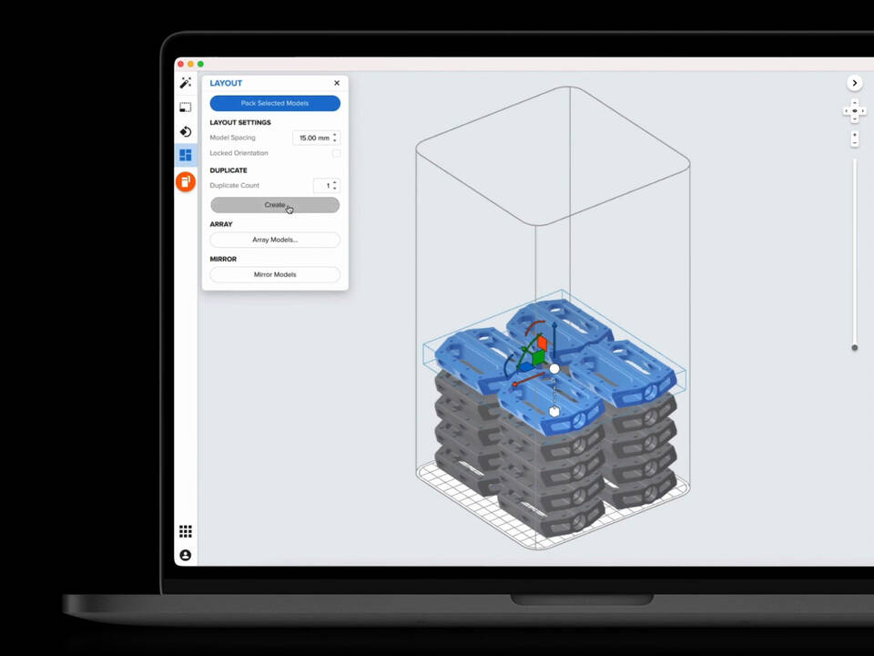
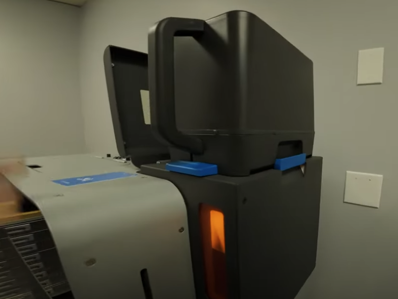
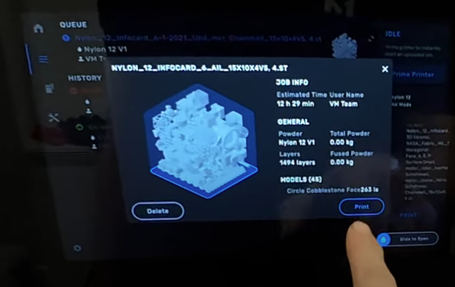
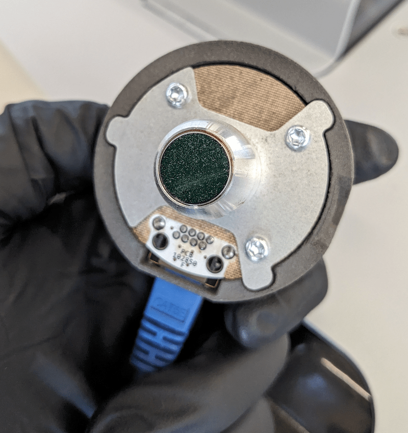
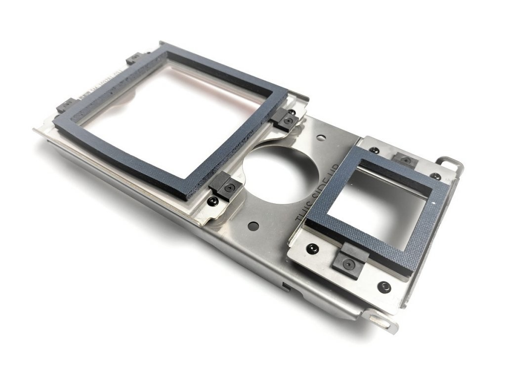
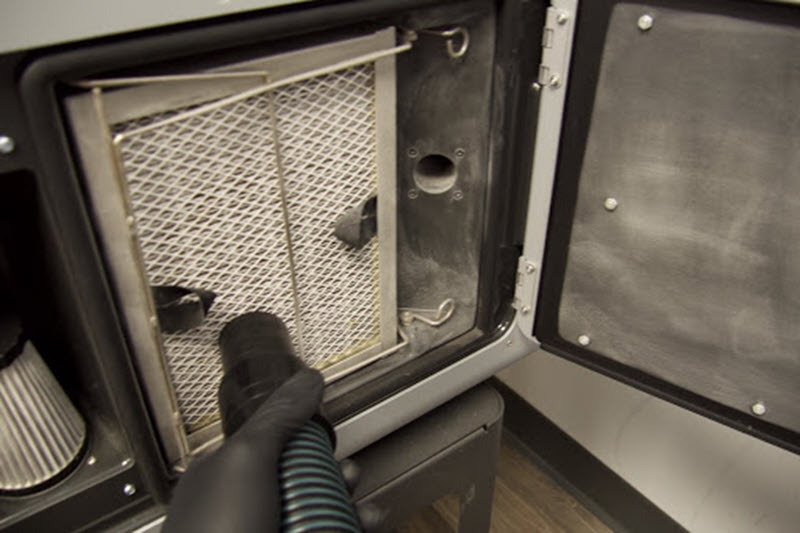
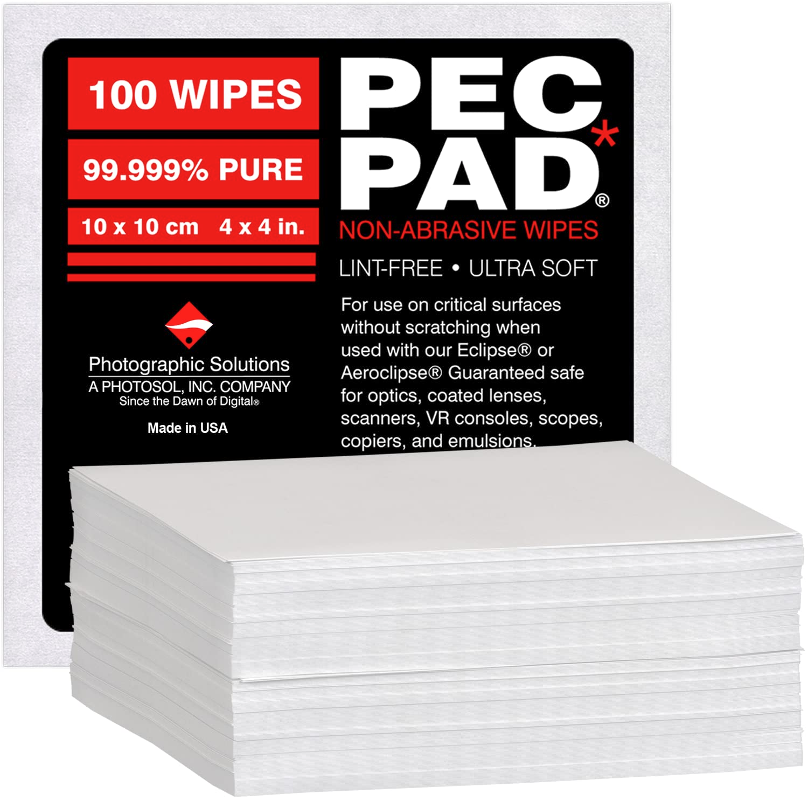
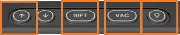
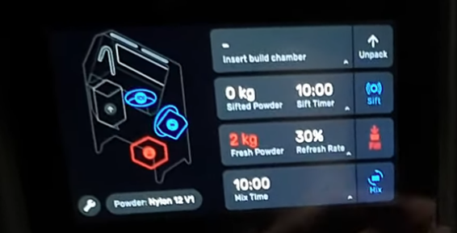

User Guide
Warning
안전 장비 필수 장착 (실험복, 마스크<방진 1급>, 니트릴 장갑 + 보안경) 호흡기 보호를 위해 반드시 방진 1급 마스크와 장갑 착용이 필요합니다.
Fuse1 이용 방법
STL 파일과 PreForm 프로그램을 이용해서 큐 올리기
- Hopper에 파우더 양 확인하기 (파우더 쌓아두지 말기)
파우더 부족하면
fill,mix진행하여 Hopper에 보충하기
빌드챔버 (플러그 까지) 장착 후 프린트 시작
 |
 |
 |
{kind=link}
{kind=link}
{kind=link}
Warning
온도가 내려가기 전까지 절대 꺼내지 마세요. 화상 위험이 있습니다. (Cooling time 지켜주세요.)
Note
- ⚠️🚦 사용 전 필수 점검 사항!! (매 프린트 시작 전!! 무조건 수행)
IR sensor: 윗 뚜껑 열어서 육안으로 확인하기 (오염시 광학천 이용)
Optical Cassette: 광학천과 에탄올 이용해서 닦아주기 (양면 중에서 윗면은 닦을 필요 없고, 아랫면 닦아주기)
내부 청결: 파우더 모두 제거
모터: Flipper motor 부분 확인하기. Recoater 광학천으로 닦아주기.
필터: 옆면 필터 먼지 진공 청소
안전장비: 필수 장착! (실험복, 마스크<방진 1급>, 니트릴 장갑 + 보안경)
 |
 |
 |
 |
{kind=link}
{kind=link}
{kind=link}
{kind=link}
Sift 이용 방법
{kind=link}

{kind=link}

안전 장비 필수 장착
Build Chamber 가져오기 (온도 충분히 식은 다음에 가져오기)
⬆️ 윗 방향 버튼 으로 눌러서 파우더 케이크 꺼내기
💡 light 버튼,
sift 버튼누르고 후처리VAC눌러서 진공 청소기로 빨아드리기 (주의: Sift랑 Vac 동시에 쓰면 전원 나갈 수 있어요)Fill: 비율 30%로 used(70) + fresh(30) Fill 받기Mix: 옆에 장착하고 Mix 버튼 눌러서 돌리기
Note
- 이용 후 마무리: 다음 사람을 위해서!
Fuse1 파우더 잔여물 청소
Fuse Sift 파우더 잔여물 청소
📢 운영 방식
주 3회 운영 원칙 (월 - 수 - 금 운영)
카톡방 이용 방법
월-수-금 요일마다 사람 모으기 → 한 명이 출력하고 톡방에 공유하기
Preform 에서 표시하는 시간 (총 시간 + Cooling 시간) 톡방에 공유하기
후처리는 각자 진행
파우더 구분
새 파우더 / 헌 파우더 (N12 재활용) / 폐 파우더
제습제로 관리